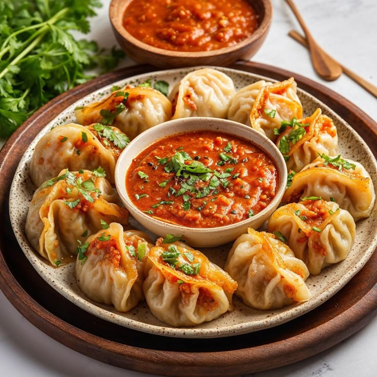

Buff MoMo

About the recipe
Nepali Buff Momos known for their juicy and flavorful filling made from buffalo meat. These dumplings are typically steamed and served with a spicy tomato-based dipping sauce called achar. The dough is made from all-purpose flour, and the filling includes minced buffalo meat mixed with finely chopped onions, fresh coriander, scallions, ginger-garlic paste, and a blend of spices. Buff Momos are enjoyed by people of all ages and are a staple at gatherings and festivals.
Ingredients:
- All-purpose flour
- Buff Mince
- Finely chopped onion
- Chopped fresh coriander
- Few finely chopped scallions (spring onion)
- Ginger-garlic paste
- Butter or Ghee
- Garam Masala (cumin, cinnamon, cardamom, cloves, pepper)
- Salt
- 1 tablespoon turmeric powder
- Chili Powder (as per your preference)
Steps:
- Setting up the stuffing: In one big bowl mix all the above fixings and then ensure it’s altogether mixed. Let it cool for 20-30 minutes.
- Setting up the patties: You can purchase effectively ready-made patties from some store or you can prepare by yourself using flour.
- First of all take a big bowl to make a dough. Add a one bowl of plain flour, salt and one tablespoon of oil. Knead the dough by adding warm or normal water thoroughly to make a perfect dough.
- Wrap it in plastic and left it for 3-4 hours.
- Remove the plastic and divide the dough into small balls. Stretch out into a thin round shape to fill the mince.
- And then wrap it as per your design.
- After that steam it in a steamer for 5-7 minutes and then serve it with spicy momo ko achar.